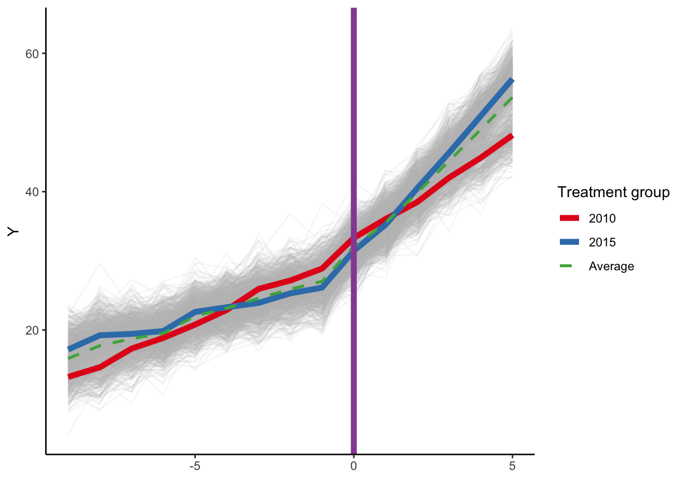
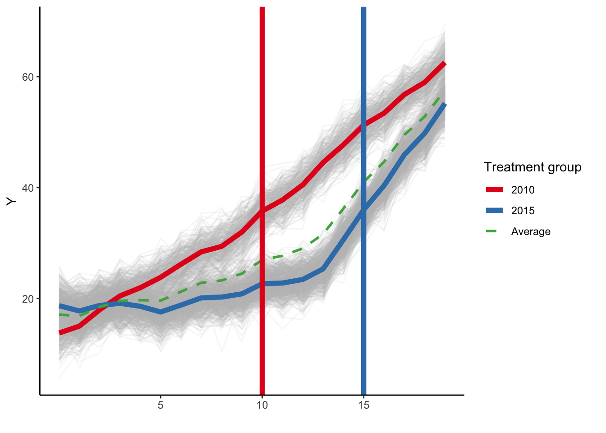

First let’s simulate some data. Although this is an ITS analysis that usually would have two time series, I’ve simulated a bunch of units for each treatment group to generate some sampling error. We’ll simulate 1000 observations from 30 different groups (e.g., states) over a period of 20 years, but in this case every single group is treated (i.e., there are no ‘never treated’ units.). There are two treatment cohorts that are treated at different times, one in 2010 and the other in 2015. The 2015 cohort is twice as large as the 2010 cohort, just to include some variation. Each group has both a different underlying secular trend and a different treatment effect.
Code
# load packageslibrary(here)library(tidyverse)library(estimatr)library(modelsummary)library(marginaleffects)library(tinytable)# set seed for reproducibilityset.seed(48620)# unit fixed effects (unobserved heterogeneity)unit <-tibble(unit =1:1000,# generate clustersstate =sample(1:30, 1000, replace =TRUE),unit_fe =rnorm(1000, state/10, 1),# generate instantaneous treatment effect#mu = rnorm(nobs, true_mu, 0.2)mu =2)# year fixed effects (first part)year <-tibble(year =2001:2020,year_fe =rnorm(length(year), 0, 0.5))# Put the clusters into treatment groupstreat_taus <-tibble(# sample the clusters randomlystate =sample(1:30, 30, replace =FALSE),# place the randomly sampled states into 1\{t \ge g \}G_gcohort_year =sort(rep(c(2010, 2015), times=c(10,20))))# make main dataset# full interaction of unit X year dtest <-expand_grid(unit =1:1000, year =2001:2020) %>%left_join(., unit) %>%left_join(., year) %>%left_join(., treat_taus) %>%# make error term and get treatment indicators and treatment effects# Also get cohort specific trends (modify time FE)mutate(error =rnorm(1000*20, 0, 2),treat =ifelse((year >= cohort_year), 1, 0),# treatment effect = 3 if 2015, 6 if 2010, annuallymu =ifelse(cohort_year==2015, 4, 1),tau =ifelse(treat ==1, mu, 0),# year trends differ by cohortyear_fe = year_fe + (2020- cohort_year) * (year - cohort_year) /5+20 ) %>%# calculate cumulative treatment effectsgroup_by(unit) %>%mutate(tau_cum =cumsum(tau)) %>%ungroup() %>%# calculate the dependent variablemutate(y = (2020- cohort_year) + unit_fe + year_fe + tau_cum + error) # Relabel 2018 cohort as never-treated# mutate(cohort_year = ifelse(cohort_year == 2018, Inf, cohort_year))# bring in simulated DiD datasetds <- dtest %>%# read_rds(here("data", #"did-sim-data.rds")) %>%mutate(year0 = year -2001,yearc = year - cohort_year,cohort_2015 =ifelse(cohort_year ==2015, 1, 0))
Here is a plot of the simulated data, with the averages plotted for each cohort and the time of intervention marked on the graph. The specific treatment effects are 1 for the 2010 cohort and 4 for the 2015 cohort.
Group-specific analysis
What is the causal effect of the intervention in the 2010 cohort?
Let’s do the ITS for the early treated cohort with a simple model like:1
First, let’s estimate the models separately for each cohort. We’ll use the lm_robust function from estimatr to easily get cluster robust standard errors.
The slope estimates are basically what we specified (with sampling error) in the simulation (1 for the 2010 cohort and 4 for the 2015 cohort). Now let’s estimate the effect of the intervention at the end of follow-up, setting year0=19 and estimating the difference by treatment status, using the marginaleffects package. We’ll estimate the average predictions under each treatment regime and then calculate the difference.
So, we get predictions of 62.4 under treatment and 51.5 in the counterfactual absence of treatment for the 2010 cohort. The difference is 11. For the 2015 later-treated cohort, at the end of follow-up we get predictions of 55.9 under treatment and 32.8 in the counterfactual absence of treatment. The difference is 23.1. If we wanted to ignore any heterogeneity and just calculate an average causal effect at the end of follow-up, we can just take a weighted average of the cohort-specific effects.
Code
te <- p_2010$estimate[3]*(1/3) + p_2015$estimate[3]*(2/3)
The average causal effect in the population is 19.08.
In each of these cases it is clear that we are comparing each treated unit to itself to generate these counterfactual estimates. We can also use marginaleffects to get the average annual slopes (though redundant since these are linear models)
Same values as shown for the year0 x treat variable in the table of model estimates above. Although we fit these models separately, we could hand calculate an overall averaged effect (ignoring cohort heterogeneity). The 2015 cohort is twice as large as the 2010 cohort, so a weighted average of the average treatment slopes above is (1/3) * 0.92 + (2/3) * 3.95, which is about 2.94.
Pooled analysis with calendar time
Now let’s analyze the entire cohort pooled together. Including a fixed effect for cohort in these models will only allow for an overall level shift, and if we include a product term between cohort and time, and cohort and the product term, we can recover the causal effects in both cohorts, or averaged over the entire period. Here are the model estimates:
Code
m_all <-lm_robust(formula = y ~ year0 * treat, data = ds, clusters = state)m_all_s <-lm_robust(formula = y ~ cohort_2015 + year0 * treat, data = ds, clusters = state)m_all_int <-lm_robust(formula = y ~ cohort_2015 * year0 * treat, data = ds, clusters = state)modelsummary(list("No cohort"= m_all,"Cohort FE"= m_all_s, "Interactive"= m_all_int),fmt =2, gof_omit ='DF|Deviance|R2|AIC|BIC|RMSE')
No cohort
Cohort FE
Interactive
(Intercept)
13.39
18.29
12.97
(0.36)
(0.79)
(0.28)
year0
1.05
1.30
2.03
(0.01)
(0.05)
(0.01)
treat
-5.10
-15.80
-6.44
(1.57)
(2.80)
(0.12)
year0 × treat
1.37
1.79
0.92
(0.05)
(0.17)
(0.01)
cohort_2015
-8.37
-0.93
(0.43)
(0.36)
cohort_2015 × year0
-0.93
(0.01)
cohort_2015 × treat
-45.48
(0.38)
cohort_2015 × year0 × treat
3.03
(0.02)
Num.Obs.
20000
20000
20000
Std.Errors
by: state
by: state
by: state
If we use the interacted model we can recover the cohort-specific treatment effects at the end of follow-up above (again, setting year0 to 19), as well as getting an overall average (although we probably wouldn’t want to ignore this kind of heterogeneity).
Code
# predictions at end of follow-up by treatmentm_all_int_ap <-avg_predictions(m_all_int, variable =c("cohort_2015", "treat"), newdata =datagrid(year0 =19))# treatment effectsm_all_int_te <-avg_predictions(m_all_int, variable =c("cohort_2015", "treat"), newdata =datagrid(year0 =19),hypothesis =c("b2 - b1 = 0", "b4 - b3 = 0")) %>%mutate(term =c("2010 cohort", "2015 cohort"))modelsummary(list("Marginal effects from interaction model"= m_all_int_te), fmt=2,statistic ="conf.int", shape = term ~ statistic)
Marginal effects from interaction model
Est.
2.5 %
97.5 %
2010 cohort
10.97
10.61
11.32
2015 cohort
23.13
22.98
23.28
Same estimates that we calculated in the separate models above. Now for the average slopes:
As noted above, since the 2015 cohort is twice as large as the 2010 cohort, if we wanted an overall effect the weighted average effect can be derived by setting the value of cohort_2015 to 0.67.
Code
# predictions at end of follow-up# averaging over the entire samplem_all_int_aap <-avg_predictions(m_all_int, variable ="treat", newdata =datagrid(year0 =19, cohort_2015 = (2/3))) %>%mutate(term =c("Untreated", "Treated"))# average treatment effectm_all_int_ate <-comparisons(m_all_int, variable ="treat", newdata =datagrid(year0 =19, cohort_2015 = (2/3))) %>%mutate(term ="Difference")m_all_int_ates <- m_all_int_aap %>%bind_rows(m_all_int_ate)modelsummary(list("Population average effect: interaction model"= m_all_int_ates),fmt =2, statistic ="conf.int", shape = term ~ model + statistic,gof_omit ='DF|Deviance|R2|AIC|BIC|RMSE',notes ="Note: cohort fixed effect set to 2/3.")
Population average effect: interaction model
Est.
2.5 %
97.5 %
Note: cohort fixed effect set to 2/3.
Untreated
39.04
38.67
39.40
Treated
58.11
57.79
58.44
Difference
19.08
18.92
19.23
Same average predictions and treatment effects as we calculated above. We can do the same for the slopes:
Now what about the treatment effects for the other models? If we ignore cohort all together:
Code
# predictions at end of follow-upm_all_ap <-avg_predictions(m_all, variable ="treat", newdata =datagrid(year0 =19)) %>%mutate(term =c("Untreated", "Treated"))# effect of treatmentm_all_te <-comparisons(m_all, variable ="treat", newdata =datagrid(year0 =19)) %>%mutate(term ="Difference")# average slopes by treatmentm_all_as <-avg_slopes(m_all, variables ="year0", by="treat") %>%mutate(term =c("Pre", "Post"))# treatment slopesm_all_slope <-avg_slopes(m_all, variables ="year0", by="treat", hypothesis ="b2 - b1 = 0") %>%mutate(term ="Difference")m_all_table <- m_all_ap %>%bind_rows(m_all_te, m_all_as, m_all_slope) %>%select(term, estimate, std.error, conf.low, conf.high)colnames(m_all_table) <-c(" ", "Est.", "SE", "2.5%", "97.5%")tt(m_all_table, digits =2) %>%group_tt(j =list("No cohort FE"=2:5),i =list("Predictions at year 20"=1, "Slope estimates"=4))
No cohort FE
Est.
SE
2.5%
97.5%
Untreated
33.4
0.409
32.6
34.2
Treated
54.3
0.858
52.6
56
Difference
20.9
0.544
19.9
22
Pre
1.1
0.011
1
1.1
Post
2.4
0.059
2.3
2.5
Difference
1.4
0.055
1.3
1.5
Not right. If the true impacts are an average effect of 19.08 by the end of follow-up and an average slope of 2.94, these estimates are not correct. What happens if we just condition on cohort without allowing for separate treatment effects?
Code
# predictions at end of follow-upm_all_s_ap <-avg_predictions(m_all_s, variable ="treat", newdata =datagrid(year0 =19,cohort_2015 =2/3)) %>%mutate(term =c("Untreated","Treated"))# effect of treatment at end of follow-upm_all_s_te <-comparisons(m_all_s, variable ="treat", newdata =datagrid(year0 =19,cohort_2015 =2/3)) %>%mutate(term ="Difference")# average slopem_all_s_as <-avg_slopes(m_all_s, variables ="year0", by="treat") %>%mutate(term =c("Pre", "Post"))# treatment effectm_all_s_slope <-avg_slopes(m_all_s, variables ="year0", by="treat", hypothesis ="b2 - b1 = 0") %>%mutate(term ="Difference")m_all_s_table <- m_all_s_ap %>%bind_rows(m_all_s_te, m_all_s_as, m_all_s_slope) %>%select(term, estimate, std.error, conf.low, conf.high)colnames(m_all_s_table) <-c(" ", "Est.", "SE", "2.5%", "97.5%")tt(m_all_s_table, digits =2,notes ="Note: Cohort set to 2/3 for predictions") %>%group_tt(j =list("With cohort FE"=2:5),i =list("Predictions at year 20"=1, "Slope estimates"=4))
With cohort FE
Est.
SE
2.5%
97.5%
Note: Cohort set to 2/3 for predictions
Untreated
37.5
0.462
36.6
38.4
Treated
55.6
0.176
55.3
56
Difference
18.2
0.473
17.2
19.1
Pre
1.3
0.053
1.2
1.4
Post
3.1
0.119
2.9
3.3
Difference
1.8
0.172
1.4
2.1
This is a little better but generally still not correct, which is perhaps not that surprising since simply adding a cohort fixed effect only allows for a level shift.
Relative time
Now let’s work with relative time. First, let’s plot the data.
Code
ds %>%ggplot(aes(x = yearc, y = y, group = unit)) +geom_line(alpha =1/8, color ="grey") +geom_line(data = ds %>%group_by(cohort_year, yearc) %>%summarize(y =mean(y)),aes(x = yearc, y = y, group =factor(cohort_year),color =factor(cohort_year)), linewidth =2) +geom_line(data = ds %>%group_by(yearc) %>%summarize(y =mean(y)),aes(x = yearc, y = y, color ="#4daf4a", group="All"), linewidth =1, linetype =2) +labs(x ="", y ="Y", color ="Treatment group ") +scale_x_continuous(breaks =c(-5, 0, 5, 10)) +geom_vline(xintercept =0, color ='#984ea3', linewidth =2) +scale_color_brewer(palette ='Set1', labels =c("2010", "2015", "Average")) +theme_classic()
Yeah, this looks a little strange, and you can see that of course the average slope in the early period is only coming from the 2015 cohort, and the slope in the later post period is only coming from the 2010 cohort.
Let’s start with the model that has no cohort fixed effects.
This gives us biased estimates slope effects (recall that the average slope should be 2.94). Moreover, since we are now working with relative time we can’t specify the treatment effect at the end of follow-up, we have to specify a relative time. But this means either extrapolating beyond the observed data for the later-treated cohort (if we set the centered year variable (yearc) to 10 years post), or shortening the time horizon for the early treated cohort (if we set yearc to 5). Here are the estimated predictions and treatment effects at year 10 post intervention:
Code
# predictions at 10 years of follow upm_all_c_ap <-avg_predictions(m_all_c, variable ="treat", newdata =datagrid(yearc =10)) %>%mutate(term =c("Untreated","Treated"))# effect of treatmentm_all_c_te <-comparisons(m_all_c, variable ="treat", newdata =datagrid(yearc =10)) %>%mutate(term ="Difference")m_all_c_ate <- m_all_c_ap %>%bind_rows(m_all_c_te)modelsummary(list("No cohort fixed effect"= m_all_c_ate),fmt =2, statistic ="conf.int", shape = term ~ model + statistic,gof_omit ='DF|Deviance|R2|AIC|BIC|RMSE',notes ="Note: predictions 10-years post intervention")
No cohort fixed effect
Est.
2.5 %
97.5 %
Note: predictions 10-years post intervention
Untreated
39.34
38.51
40.16
Treated
65.15
63.07
67.23
Difference
25.81
23.08
28.54
Okay, now we get an estimate of 25.81. Recall that the overall average effect at the end of follow-up was `19.08. Obviously extrapolation is having some consequence here.
Let’s add a cohort fixed effect and look at the estimated slope effect:
Our estimate is now 2.08, compared to the true estimate of 2.94.
Now let’s limit our comparisons to only the years where we have sufficient overlap of years once we center things (i.e., where yearc >= -9 or <= 5). Here is a plot of the restricted data:

Here are the models using relative time, with and without a cohort fixed effect:
As the model comparison shows, including just the cohort fixed effect here only allows for a ‘level shift’, so it has no impact on the slope for yearc or the product term between treat and yearc. So these models will both produce the same average slopes (though not the same average predictions because of the cohort fixed effect).
The average slope for the model with cohort is -1.45 and the estimate for the model without the cohort term is -1.45. The pre and post slope levels for the restricted relative time models differ due to the cohort term, but both are nearly the same for the estimate we calculated as a weighted average for the full sample using calendar time, which was 2.94.
How about for a fully-interacted model with relative time? Let’s compare it with our model using all of the data above:
With the fully interacted model using relative time, you get nearly the same slope parameters for year and year * treatment (well within sampling error) since there is no non-linearity in the slopes for either cohort, but the level parameters (intercept, treatment effect at year0, and cohort fixed effect) all will be different. You can then back out predictions for a fixed time post-intervention (e.g., 10 years), but this will obviously lead to extrapolation for the later treated cohort. Nevertheless this shows that the relative time model after eliminating overlap can recover estimates of the true treatment effects.
Hang on…
The big caveat to the last point above is that this only occurs under specific kinds of scenarios. In particular, the restricted, centered time approach ‘works’ in recovering the true slopes in our prior example because the simulated trends are linear (though not identical across cohorts) in both of the pre- and post-treatment periods. It’s intuitive in the since that, if the trends are linear through the entire time, it shouldn’t matter much whether you use 10 pre-periods or 5 pre-periods to estimate the pre-intervention slope (and vice versa for the post-intervention slope in the early treated cohort).
But this is a strong (and unnecessary) assumption. Plus, if there is non-linearity in the slopes then restricting the analysis to periods of overlap won’t actually help. Let simulate another example. The treatment effects are identical but now we introduce a small amount of non-linearity to the pre-intervention trends for the 2015 cohort.
Here is the code to simulate:
Code
set.seed(4705)# unit fixed effects (unobserved heterogeneity)unit <-tibble(unit =1:1000,# generate clustersstate =sample(1:30, 1000, replace =TRUE),unit_fe =rnorm(1000, state/10, 1),# generate instantaneous treatment effect#mu = rnorm(nobs, true_mu, 0.2)mu =2)# year fixed effects (first part)year <-tibble(year =2001:2020,year_fe =rnorm(length(year), 0, 0.5))# Put the clusters into treatment groupstreat_taus <-tibble(# sample the clusters randomlystate =sample(1:30, 30, replace =FALSE),# place the randomly sampled states into 1\{t \ge g \}G_gcohort_year =sort(rep(c(2010, 2015), times=c(10,20))))# make main dataset# full interaction of unit X year dtest2 <-expand_grid(unit =1:1000, year =2001:2020) %>%left_join(., unit) %>%left_join(., year) %>%left_join(., treat_taus) %>%# make error term and get treatment indicators and treatment effects# Also get cohort specific trends (modify time FE)mutate(error =rnorm(1000*20, 0, 2),treat =ifelse((year >= cohort_year), 1, 0),# treatment effect = 4 if 2015, 1 if 2010, annuallymu =ifelse(cohort_year==2015, 4, 1),tau =ifelse(treat ==1, mu, 0),# year trends differ by cohortyear_fe =ifelse(cohort_year==2015& year<2006, year_fe + (2015- cohort_year) * (year - cohort_year) /5+12, year_fe + (2020- cohort_year) * (year - cohort_year) /5+20) ) %>%# calculate cumulative treatment effectsgroup_by(unit) %>%mutate(tau_cum =cumsum(tau)) %>%ungroup() %>%# calculate the dependent variablemutate(y = (2020- cohort_year) + unit_fe + year_fe + tau_cum + error) # bring in simulated DiD datasetdss <- dtest2 %>%# read_rds(here("data", #"did-sim-data.rds")) %>%mutate(year0 = year -2001,yearc = year - cohort_year,cohort_2015 =ifelse(cohort_year ==2015, 1, 0))
Here is our new plot:
Code
dss %>%ggplot(aes(x = year0, y = y, group = unit)) +geom_line(alpha =1/8, color ="grey") +geom_line(data = dss %>%group_by(cohort_year, year0) %>%summarize(y =mean(y)),aes(x = year0, y = y, group =factor(cohort_year),color =factor(cohort_year)), linewidth =2) +geom_line(data = dss %>%group_by(year0) %>%summarize(y =mean(y)),aes(x = year0, y = y, color ="#4daf4a", group="All"), linewidth =1, linetype =2) +labs(x ="", y ="Y", color ="Treatment group ") +scale_x_continuous(breaks =c(5, 10, 15, 20)) +geom_vline(xintercept =10, color ='#E41A1C', linewidth =2) +geom_vline(xintercept =15, color ='#377EB8', linewidth =2) +scale_color_brewer(palette ='Set1', labels =c("2010", "2015", "Average")) +theme_classic()

In this particular scenario, the non-linear part of the trend for the 2015 cohort is in the very early pre-period (everything else is the same), which means it won’t be captured when we have to restrict to years of overlap when using relative time. Here is a plot using relative time:
Code
dss %>%filter(yearc >=-9& yearc <=5) %>%ggplot(aes(x = yearc, y = y, group = unit)) +geom_line(alpha =1/8, color ="grey") +geom_line(data = ds %>%filter(yearc >=-9& yearc <=5) %>%group_by(cohort_year, yearc) %>%summarize(y =mean(y)),aes(x = yearc, y = y, group =factor(cohort_year),color =factor(cohort_year)), linewidth =2) +geom_line(data = ds %>%filter(yearc >=-9& yearc <=5) %>%group_by(yearc) %>%summarize(y =mean(y)),aes(x = yearc, y = y, color ="#4daf4a", group="All"), linewidth =1, linetype =2) +labs(x ="", y ="Y", color ="Treatment group ") +scale_x_continuous(breaks =c(-5, 0, 5, 10)) +geom_vline(xintercept =0, color ='#984ea3', linewidth =2) +scale_color_brewer(palette ='Set1', labels =c("2010", "2015", "Average")) +theme_classic()
This looks a lot like the plot from our earlier simulation. We won’t go through all of the prior models, but let’s compare what we get from the interactive analysis using calendar time, as well as the simple model using restricted time, which we saw gave us the correct slope in the example above. Here are the models and parameters:
Code
# calendar time full modelm_all_int2 <-lm_robust( y ~ cohort_2015 * year0 * treat,data = dss, clusters = state)# relative time full modelm_all_scri2 <-lm_robust( y ~ cohort_2015 * yearc * treat,data=subset(dss, yearc >=-9& yearc <=5), clusters = state)# relative time basic modelm_all_cr2 <-lm_robust( y ~ yearc * treat,data=subset(dss, yearc >=-9& yearc <=5), clusters = state)# relative time basic modelm_all_crs2 <-lm_robust( y ~ cohort_2015 + yearc * treat,data=subset(dss, yearc >=-9& yearc <=5), clusters = state)modelsummary(list("Calendar time"= m_all_int2,"Relative time (restricted)"= m_all_scri2,"Basic model (restricted)"= m_all_cr2), fmt =2, coef_rename =c("year0"="year", "yearc"="year"),gof_omit ='DF|Deviance|R2|AIC|BIC|RMSE')
Calendar time
Relative time (restricted)
Basic model (restricted)
(Intercept)
13.72
32.08
27.79
(0.39)
(0.36)
(0.59)
cohort_2015
3.32
-6.38
(0.42)
(0.41)
year
2.04
2.04
1.26
(0.01)
(0.01)
(0.10)
treat
-9.02
-0.07
3.44
(0.11)
(0.10)
(0.47)
cohort_2015:year
-1.53
-1.16
(0.01)
(0.02)
cohort_2015:treat
-45.09
5.22
(0.32)
(0.13)
year:treat
1.01
1.04
3.01
(0.01)
(0.02)
(0.26)
cohort_2015:year:treat
3.34
2.94
(0.02)
(0.03)
Num.Obs.
20000
15000
15000
Std.Errors
by: state
by: state
by: state
We can see that the basic model with restricted time has a different year x treat term, and the interactive model has a different value for the 3-way interaction between cohort, year, and treatment.
Okay, so introducing this bit of non-linearity in the early years flattens the pre-intervention slope for the 2015 cohort, so the treatment effect is also a little larger (3.23) relative to the previously simulated data (2.94).
Above we saw that when using relative time and limiting the data to years of overlap even the simple models with or without a fixed effect for cohort could recover the weighted average treatment slope from the calendar time model. What do we get now?
As above we get the same answer regardless of whether or not we include cohort fixed effects. However the average slope here is 3.01, which is biased downward relative to the true effect of 3.23. This is precisely because the pre-intervention slope of the restricted relative time model does not account for the diminished slope of the 2015 cohort in the early pre-period.
What about if we use the fully interacted model with restricted relative time?
Here, even the interacted model that allows for separate treatment effects by cohort does not recover the true slope. Again, you can see the main issue is the fact that the average slope for the 2015 cohort is biased downward. Obviously this latter simulation does not introduce a lot of non-linearity in the pre-trends, but even a small amount leads to bias when using relative time.
Footnotes
Note this model is set up slightly differently than an ITS where the product term uses the ‘time-since intervention’. It’s easier to estimate marginal effects when both variables in the product term are in the model, but the downside is that the coefficient on treat now does not directly give us the step change at the time of the intervention. That can be easily done via marginal predictions.↩︎